生成AWR
生成AWR 导出AWR报告
导出AWR报告从数据库监控面板中的数据库列表的操作下拉菜单中点击AWR报告可以打开数据库AWR报告面板，该页面用于查看当前数据库实例的AWR报告。报告中包括以下几个部分：
页面如下图所示:
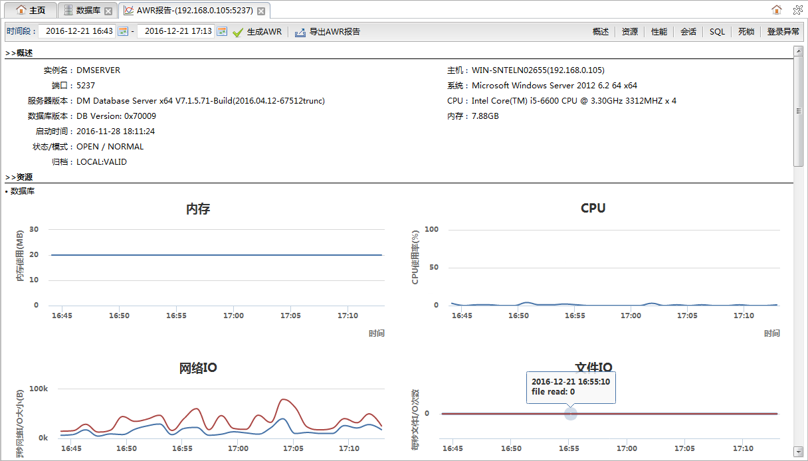
功能按钮列表| 按钮 | 说明 |
|---|---|
| 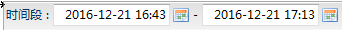 | 指定要查看什么时间段的awr报告，时间间隔不能超过7天。指定时间段后点击生成AWR按钮重新生成awr报告。 |
| 生成AWR |
重新生成AWR报告。 |
| 导出AWR报告 |
导出AWR报告，报告以邮件方式发送到当前用户邮箱中。 |
| 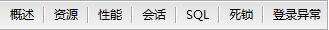 | 当前页面的模块定位按钮。点击每个按钮可以快速滚动到相应的模块。 |
数据库以及所在主机的基本信息，如下图所示：
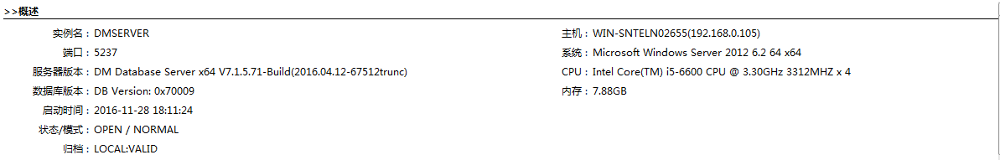
数据库及其所在主机的资源使用情况曲线图。
数据库资源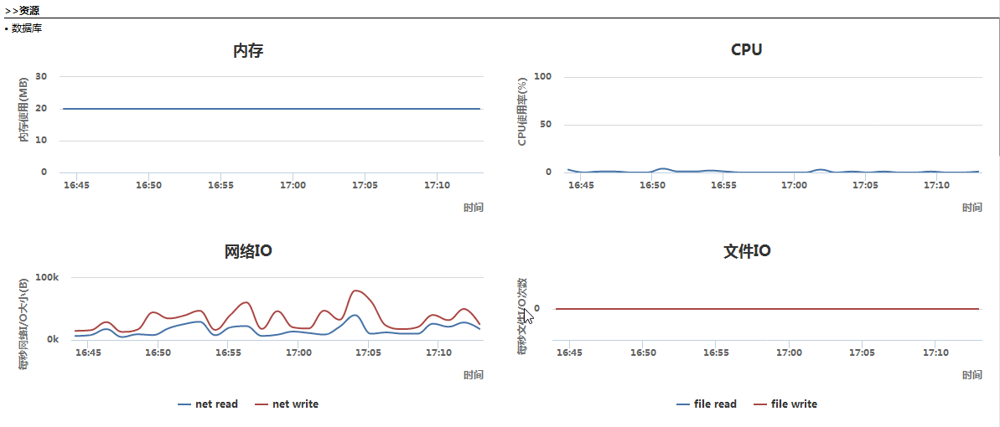
| 图表 | 说明 |
|---|---|
| 内存 | 内存使用情况。横坐标是时间，纵坐标是内存使用大小，单位MB。 |
| CPU | cpu使用情况。横坐标是时间，纵坐标是cpu使用率，单位%。 |
| 网络IO | 网络读写速率。横坐标是时间，纵坐标是读写速率，单位B/s。 |
| 文件IO | 文件读写次数。横坐标是时间，纵坐标是读写次数。 |
主机资源
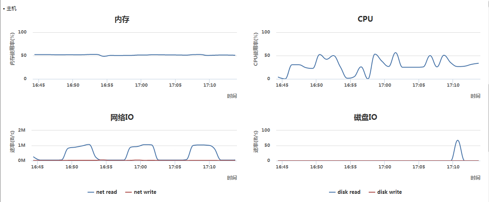
| 图表 | 说明 |
|---|---|
| 内存 | 内存使用情况。横坐标是时间，纵坐标是内存使用率，单位%。 |
| CPU | cpu使用情况。横坐标是时间，纵坐标是cpu使用率，单位%。 |
| 网络IO | 网络读写速率。横坐标是时间，纵坐标是读写速率，单位B/s。 |
| 磁盘IO | 磁盘读写速率。横坐标是时间，纵坐标是读写速率，单位B/s。 |
反映数据库性能指标的曲线图，如下图所示：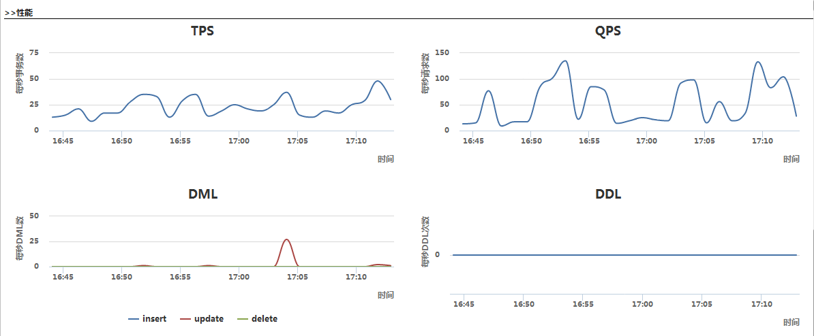
| 图表 | 说明 |
|---|---|
| TPS | 每秒事务数。横坐标是时间，纵坐标是平均每秒执行的事务数。 |
| QPS | 每秒请求数。横坐标是时间，纵坐标是平均每秒请求数。 |
| DML | 每秒DML操作数，分为三条曲线（插入，更新，删除）。横坐标是时间，纵坐标是平均每秒DML操作数 |
| DDL | 每秒DDL操作数。横坐标是时间，纵坐标是平均每秒DDL操作数。 |
数据库会话数和线程数曲线图，如下图所示：
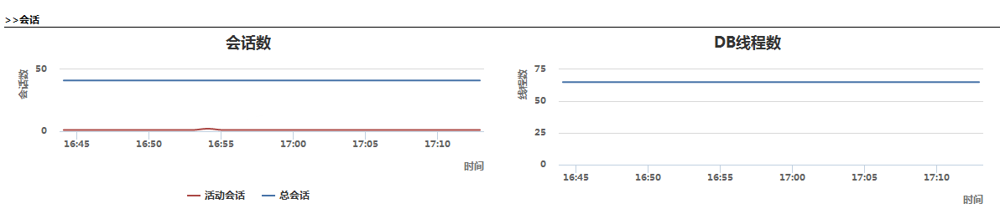
| 图表 | 说明 |
|---|---|
| 会话数 | 数据库会话数，分为两条曲线：总会话数和活动会话数。横坐标是时间，纵坐标是会话数。 |
| DB线程数 | 数据库线程数。横坐标时间，纵坐标线程数。 |
数据库执行sql的统计信息，包括TOP 20条慢SQL和TOP 20条高频sql。如下图所示：
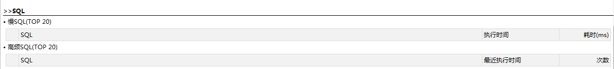
慢SQL列表
| 字段 | 说明 |
|---|---|
| SQL | sql语句。 |
| 执行时间 | 在什么时间执行的这条sql语句。 |
| 耗时 | 执行sql语句用了多少时间，单位ms。 |
高频SQL列表
| 字段 | 说明 |
|---|---|
| SQL | sql语句。 |
| 最近执行时间 | 最近一次执行是在什么时间。 |
| 次数 | 该语句已经执行了多少次。 |
数据库最近20次死锁信息。如下图所示：
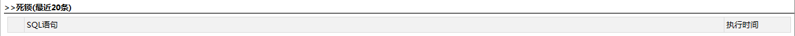
死锁信息列表
| 字段 | 说明 |
|---|---|
| SQL语句 | 导致死锁的sql语句。 |
| 执行时间 | 死锁发生时间。 |
数据库最近20次用户异常登录信息。如下图所示：
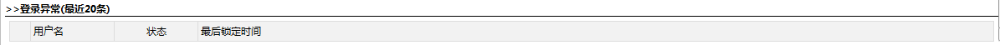
异常登录信息列表
| 字段 | 说明 |
|---|---|
| 用户名 | 登录的用户名。 |
| 状态 | 登录状态。 |
| 最后锁定时间 | 最近一次锁定的时间。 |